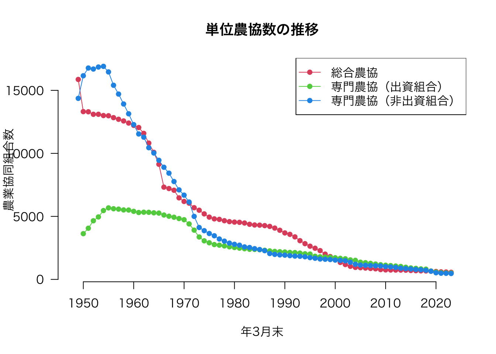
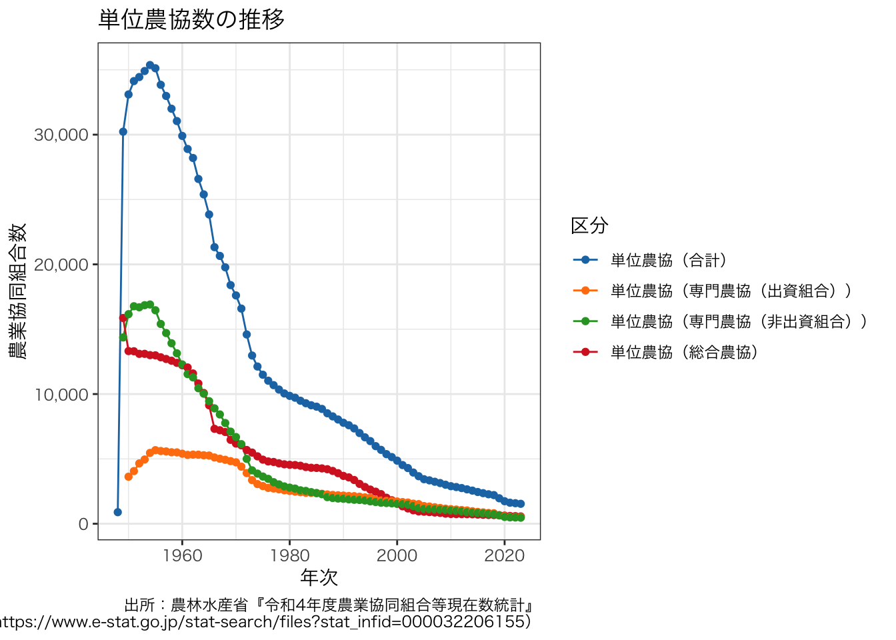

library(readxl)
df <- readxl::read_excel("r006-02-001.xls", col_names = FALSE, skip = 12)統計データを用いた作図：e-Stat（API）編
ここでは，農業協同組合数の推移の折れ線グラフを作成します。
消費生活協同組合 のときと同じように，農業協同組合に関する統計データもe-Statから取得できます。 農業協同組合数の推移がわかる最新のデータは，次のページから取得できます。 実際に検索してみて，このページにたどり着けるか試してみましょう。
農業協同組合等現在数統計 / 確報 令和４年度農業協同組合等現在数統計
1 総括の部 農業協同組合、同連合会及び農事組合法人数の推移（第１表）
https://www.e-stat.go.jp/stat-search/files?stat_infid=000040060821
上述のサイトから，r006-02-001.xls という名前のExcel形式のファイルをダウンロードできます。 以下の説明は，Excelでは満足できない人のためのものです。 Excelを使って作成するグラフとRを使って作成するグラフの何が違うのか，どちらが好みかを考えながら作業してみてください。
1 Excelファイルを使う方法
1.1 Excelファイルの読み込み
ここでも，e-StatにあるExcelファイルのフォーマットが原因で，データを扱えるようにするまでが一苦労です。 本当なら試行錯誤が必要ですが，以下のとおり実行すれば問題なく読み込めます（今回の場合，ヘッダーを読み込むのを諦めました）。
以下のコマンドでExcelファイルを読み込みます。
次に，読み込んだデータの前処理をします。 ここで何をやるかは，そのファイルがどうなっているかに依存します。 この作業を地道にやることにより，データ分析を見越して綺麗なファイルを作成しなければならないことに気づくことでしょう。
# 前処理半作：データ分析は前処理が大事だという諺（嘘）
df_header1 <- c("", rep("単位農協", 4), rep("連合会", 3), rep("農事組合法人", 4))
df_header2 <- c("年次", "総合農協", "専門農協（出資組合）", "専門農協（非出資組合）", "合計", "出資連合会", "非出資連合会", "合計", "１号", "２号", "１号及び２号", "合計")
df_header <- paste0(paste(df_header1, df_header2, sep = "（"), "）")
df_header <- sub("^（年次）", "年次", df_header)
names(df) <- df_header
df <- df[-c((nrow(df) - 4):nrow(df)), ]
# 8.3(変更前)の行を削除
df <- df[-49, ]
# 和暦を西暦に変換する関数
convert_to_ad <- function(nen) {
# 和暦と西暦の対応表
era_table <- c("明治" = 1868, "大正" = 1912, "昭和" = 1926, "平成" = 1989, "令和" = 2019)
# 和暦の元号を補う
for (i in 2:length(nen)) {
if (!grepl("^[明大昭平令]", nen[i])) {
nen[i] <- paste0(substr(nen[i - 1], 1, 2), nen[i])
}
}
nen <- gsub("元", "1", nen)
# 和暦から西暦の年を計算する
ad_years <- numeric(length(nen))
for (era in names(era_table)) {
year <- as.numeric(gsub(era, "", nen[grepl(era, nen)]))
ad_years[grepl(era, nen)] <- era_table[era] + year - 1
}
return(ad_years)
}
df$年次 <- gsub("\\..*?$", "", df$年次)
df$年次 <- gsub("^S", "昭和", df$年次)
df$年次 <- gsub("^H", "平成", df$年次)
df$年次 <- gsub("^R", "令和", df$年次)
df$年次 <- convert_to_ad(df$年次)
# 以下は好みであり，実行しなくてもよい
dfcoop <- data.frame(df, check.names = FALSE)Excelファイルから読み込んだデータが分析可能な状態になっているかどうかを確認します。
head(dfcoop) 年次 単位農協（総合農協） 単位農協（専門農協（出資組合））
1 1948 NA NA
2 1949 15865 NA
3 1950 13314 3628
4 1951 13300 4060
5 1952 13100 4652
6 1953 13101 4955
単位農協（専門農協（非出資組合）） 単位農協（合計） 連合会（出資連合会）
1 NA 892 NA
2 14364 30229 NA
3 16159 33101 NA
4 16771 34131 NA
5 16691 34443 NA
6 16851 34907 NA
連合会（非出資連合会） 連合会（合計） 農事組合法人（１号）
1 NA NA NA
2 NA 927 NA
3 NA 1121 NA
4 NA 1123 NA
5 NA 1149 NA
6 NA 1162 NA
農事組合法人（２号） 農事組合法人（１号及び２号） 農事組合法人（合計）
1 NA NA NA
2 NA NA NA
3 NA NA NA
4 NA NA NA
5 NA NA NA
6 NA NA NAstr(dfcoop)'data.frame': 76 obs. of 12 variables:
$ 年次 : num 1948 1949 1950 1951 1952 ...
$ 単位農協（総合農協） : num NA 15865 13314 13300 13100 ...
$ 単位農協（専門農協（出資組合）） : num NA NA 3628 4060 4652 ...
$ 単位農協（専門農協（非出資組合））: num NA 14364 16159 16771 16691 ...
$ 単位農協（合計） : num 892 30229 33101 34131 34443 ...
$ 連合会（出資連合会） : num NA NA NA NA NA ...
$ 連合会（非出資連合会） : num NA NA NA NA NA NA 157 138 142 137 ...
$ 連合会（合計） : num NA 927 1121 1123 1149 ...
$ 農事組合法人（１号） : num NA NA NA NA NA NA NA NA NA NA ...
$ 農事組合法人（２号） : num NA NA NA NA NA NA NA NA NA NA ...
$ 農事組合法人（１号及び２号） : num NA NA NA NA NA NA NA NA NA NA ...
$ 農事組合法人（合計） : num NA NA NA NA NA NA NA NA NA NA ...このようになっていれば，作図や分析に使えるデータであるといえます。 なお，NA というのは NA という文字があるのではなく，そこには何もないという意味で理解するとよいでしょう。
1.2 折れ線グラフ
次に，折れ線グラフを作成します。
plot(dfcoop[, c("年次", "単位農協（総合農協）")], type = "o", main = "総合農協数の推移", xlab = "年3月末", pch = 16, las = 1)macOSの場合，文字化けする（トーフになる）かもしれません。 その場合，無視して次に進みましょう。
続いて，専門農協のうちの出資組合と非出資組合も同じ図に表示してみましょう。
dfcoop2 <- dfcoop
rownames(dfcoop2) <- dfcoop2[, 1]
dfcoop2 <- dfcoop2[, -1]
matplot(dfcoop2[, c("単位農協（総合農協）", "単位農協（専門農協（出資組合））", "単位農協（専門農協（非出資組合））")], type = "o", main = "単位農協数の推移", xlab = "年3月末", ylab = "農業協同組合数", col = 2:4, lwd = 1, lty = 1, pch = 16, las = 1, axes = FALSE)
axis(1, at = seq(3, 73, 10), labels = seq(1950, 2020, 10))
axis(2, las = 1)
legend("topright", legend = c("総合農協", "専門農協（出資組合）", "専門農協（非出資組合）"), col = 2:4, lwd = 1, lty = 1, pch = 16)
2 e-StatのAPIを使う方法
e-StatからExcelファイルをダウンロードしなくても，APIを使ってデータを取得できることがあります。 幸いなことに，今回扱った農業協同組合数の推移のデータはAPIを使って取得できます。 APIを使うと，Excelファイルを読み込む場合と異なる利点があります。 それは前処理をほとんどしなくてよいことです。
2.1 e-StatのAPI取得
まず，e-Statのサイトでユーザ登録して，APIを取得します。 取得方法は自分で調べてください。
次に，keyring: Access the system credential store from R を設定します。 これは必須ではありませんが，便利なので設定しておくとよいです。
# 以下を実行する前に，e-StatのAPIを取得しておく
install.packages("keyring")
# library(keyring)
keyring::key_set("e-stat")
# 使う場合は，以下のようにする
# keyring::key_get("e-stat")2.2 e-Statからデータ取得
いよいよ本題に入ります。 e-Statから欲しいデータを取得してみましょう。
次のコードを実行することで，欲しいデータが取得できます。 statsDataId = "0002066879" にある数字は，e-Statの農業協同組合等現在数統計 確報 令和４年度農業協同組合等現在数統計総括の部 1 農業協同組合、同連合会及び農事組合法人数の推移（第１表）のページを指すIDです。
library(httr)
response <- httr::GET(
url = "https://api.e-stat.go.jp/rest/2.1/app/getSimpleStatsData",
query = list(
appId = keyring::key_get("e-stat"),
statsDataId = "0002066879",
sectionHeaderFlg = 2
)
)
response <- httr::content(response)
df <- read.csv(text = sub("^.*\\\"VALUE\\\"\n", "", response), header = TRUE, check.names = FALSE)
df2 <- df
names(df2) <- gsub("\\(.+\\)", "", names(df2))
# 年次の整理
df2 <- df2[df2$時点 != "1996年3月末(変更前)", ]
df2 <- df2[df2$時点 != "2023年4月1日", ]
df2$年次 <- as.integer(gsub("年3月末.*$", "", df2$時点))
# 区分の整理
df2$区分 <- gsub("_", "（", df2$区分)
df2$区分 <- unlist(lapply(df2$区分, function(x) {
num_opening_brackets <- sum(utf8ToInt(x) == utf8ToInt("（"))
return(paste0(x, paste0(rep("）", num_opening_brackets), collapse = "")))
}))
head(df2) cat01_code 時点 cat02_code 区分 unit
1 1001 1948年3月末 1004 単位農協（合計） 件
2 1002 1949年3月末 1001 単位農協（総合農協） 件
3 1002 1949年3月末 1003 単位農協（専門農協（非出資組合）） 件
4 1002 1949年3月末 1004 単位農協（合計） 件
5 1002 1949年3月末 1007 連合会（合計） 件
6 1003 1950年3月末 1001 単位農協（総合農協） 件
value 年次
1 892 1948
2 15865 1949
3 14364 1949
4 30229 1949
5 927 1949
6 13314 1950欲しかったデータが分析可能な形になったことが確認できます。 このデータフレームはロングです。 ロングからワイドに変換すると人間にとって分かりやすくなりますが，ggplot2 で作図する場合は，ロングの方が扱いやすいです。
2.3 ggplot2を用いた折れ線グラフ
上記のデータフレームから折れ線グラフを作成する方法は，セクション 1.2 と同じです。 以下では，授業で使用した図の作成方法を紹介します。
library(ggplot2)
library(ggsci)
df3 <- df2[grepl("^単位農協", df2$区分), ]
g <- ggplot(data = df3, aes(x = 年次, y = value, group = 区分, colour = 区分)) +
geom_line() +
geom_point() +
scale_y_continuous(labels = scales::comma_format()) +
ggtitle("単位農協数の推移") +
labs(y = "農業協同組合数",
caption = "出所：農林水産省『令和4年度農業協同組合等現在数統計』\n（https://www.e-stat.go.jp/stat-search/files?stat_infid=000032206155）") +
theme_bw() +
scale_color_d3()
g + theme(text = element_text(family = "HiraKakuProN-W3"))
最後のところでエラーが出る場合は，g だけにして，プラス以降を入力しないでください。 文字化けしても気にせず次に進んでください（文字化けを修正するのは大変なので）。
いい感じの図が描けたら，ファイルに保存する。
outdir <- "./fig"
if (!file.exists(outdir)) {
dir.create(outdir)
}
ggsave(filename = file.path(outdir, "number_of_ja.pdf"), plot = g, width = 8, height = 4)3 e-Statの検索
セクション 2 では，statsDataId = "0002066879" とIDを指定しました。 しかし，通常はデータを探すところから始める必要があります。
以下に探し方の一例を示します。
library(httr)
library(listviewer)
library(rlist)
searchword <- "農業協同組合"
response <- httr::GET(
url = "https://api.e-stat.go.jp/rest/2.1/app/json/getStatsList",
query = list(
appId = keyring::key_get("e-stat"),
searchWord = searchword
)
) |>
httr::content()
listviewer::jsonedit(response)
df <- response$GET_STATS_LIST$DATALIST_INF$TABLE_INF |>
rlist::list.select(
id = `@id`,
STAT_NAME = STAT_NAME$`$`,
GOV_ORG = GOV_ORG$`$`,
STATISTICS_NAME = STATISTICS_NAME,
SURVEY_DATE = SURVEY_DATE,
TABLE_NAME = TITLE_SPEC$TABLE_NAME
) |>
rlist::list.stack()
head(df)
nrow(df)
library(DT)
DT::datatable(
df, caption = searchword, rownames = TRUE,
extensions = 'Buttons',
options = list(
pageLength = 10,
dom = 'Blfrtip',
buttons = list(
c('csv', 'excel')
)
)
)ここで示した方法は，Rからe-Stat APIを使う - Qiita が大変参考になりました。 これ以外にも，e-Statからデータを取得する方法はあります。 例えば，estatapi というパッケージを使ってもほぼ同じことが簡単にできるようになります。 興味ある人は，自分で確かめてください。